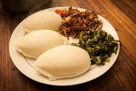

Nshima

Description
Nshima is the staple food of Zambia. It is basically a very thick porridge made from finely ground corn meal, called mealie meal.
It is served in lumps and eaten with the hands.
Ingredients
- 3 cups of Mealie Meal/ White Cornmeal
- 1 Litre Boiling water
- 1 1/2 cups Cold Water
Steps
- Heat some water in a pot or kettle until it boils
- start adding mealie meal bit by bit, stirring vigorously
- The nshima is ready to serve